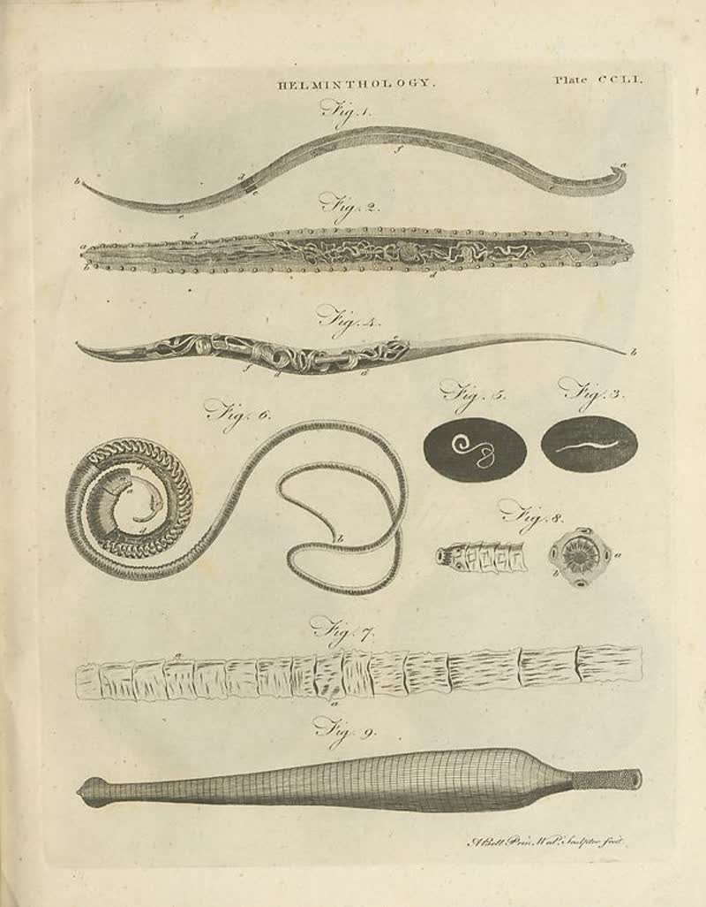

page-0651-a4e89a900a40.jpg

Page ID: britannica:309f765b1ecc83e0a7f7762e44b4a927a7555443:train:651
Running head: HELMINTHOLOGY. Plate CCLI
Image SHA-256: a4e89a900a4041b934828dcc5c677df6edf0de903ab97d097948b7b17427da7d

(untitled) [?]
Fig 1 Fig.2. Fig.2. Fig.1. O Fig.3. Fig.3. Fig.8. Fig.7. Fig.9. Fig.9.
Matched article: Fig (restaurant) (Wikipedia, revision 1346779193, re-rank score -3.5078125) · comparison